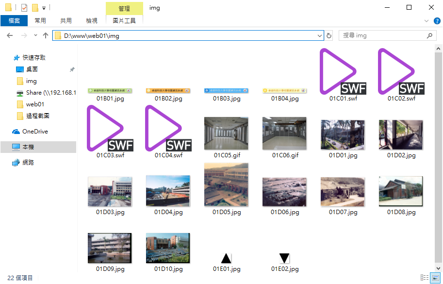
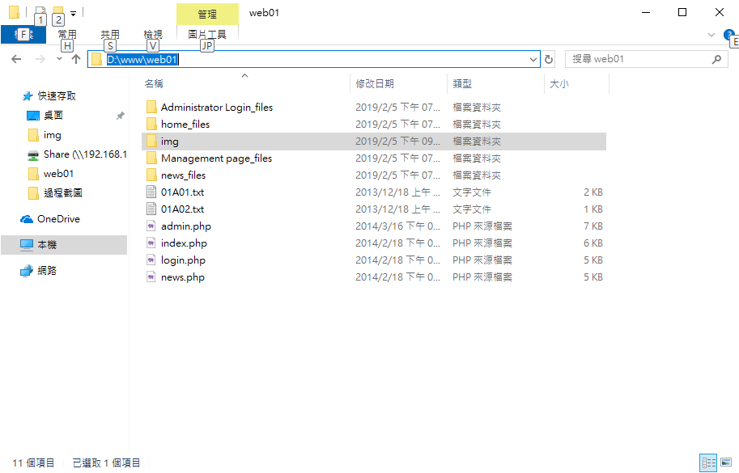

考場要求的伺服器規劃
- 建立資料夾 D:\Web01\ 並指定 XAMPP(Apache /httpd.conf)之站台路徑(root)為此
素材整理
- 建立資料夾 D:\Web01\img 並將所有圖檔放入，包含image/swf/gif，方便記憶使用。

版型整理
- 複製所有版型檔案至站台位置，包含4組資料夾與4個HTM檔。(Administrator Login_files、home_files、Management page_files、news_files)+01P01.htm~01P04.htm
- 將01P01.htm~01P04.htm 依序題目說明更名為 login.php、index.php、admin.php、news.php
- 資料夾不需要更改名，已提供上列4個PHP檔做script路徑使用
- 4組資料夾內都是同內容檔案(JS、JQ、CSS、ICON)，差於只有1個資料夾有ICON(提供CSS使用)。為了減少時間研究差異性，直接修正從 Management page_files 資料夾對 ICON 資料夾複製到另外三組資料夾內。便不用考量該CSS是否真正會用到。
